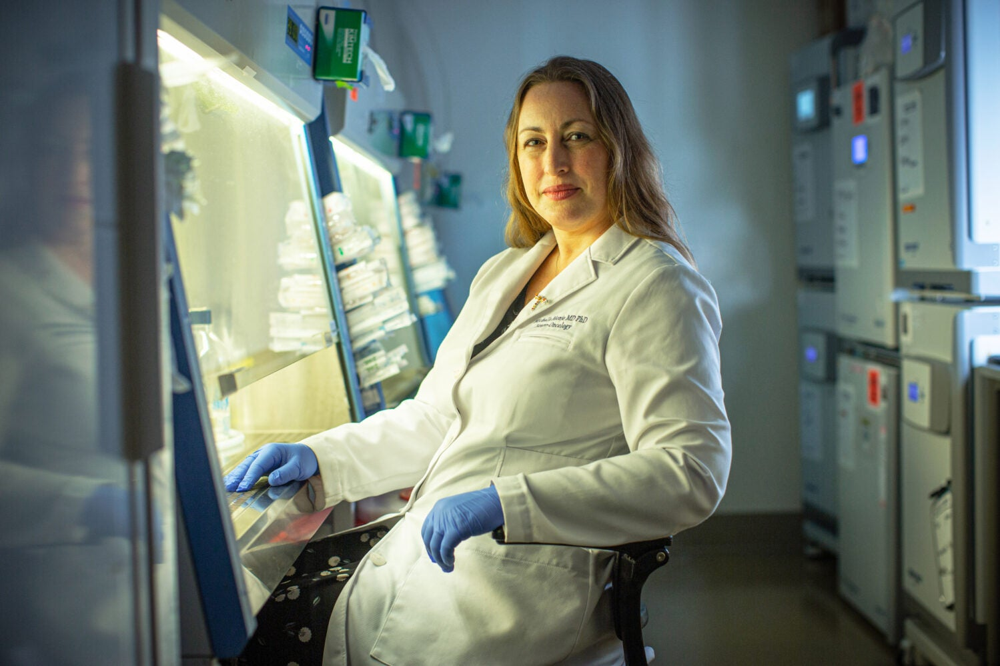
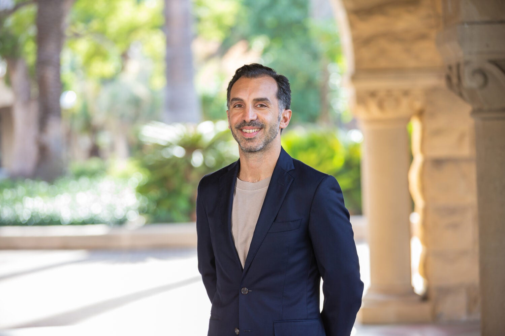

At Stanford, our mission of discovery and learning is energized by a spirit of optimism and possibility that dates to our founding. Here you’ll find a place of intellectual expansiveness, wide-ranging perspectives, and freedom to explore new lines of thinking. Buzzing with ideas and innovation, approaching questions with openness and curiosity, pursuing excellence in all we do – this is Stanford.
Campus News
Stories about people, research, and innovation across the Farm
AWARDS
Scientist, advocate, and entrepreneur Lucy Shapiro to receive Lasker-Koshland Special Achievement Award

HEALTH & MEDICINE
Lung cancer cells in the brain connect with neurons to fuel tumor growth

ARTS & HUMANITIES
Book by Emanuele Lugli introduces kids to woman who broke the arts glass ceiling
ACADEMICS
Course empowers students to communicate science to the public